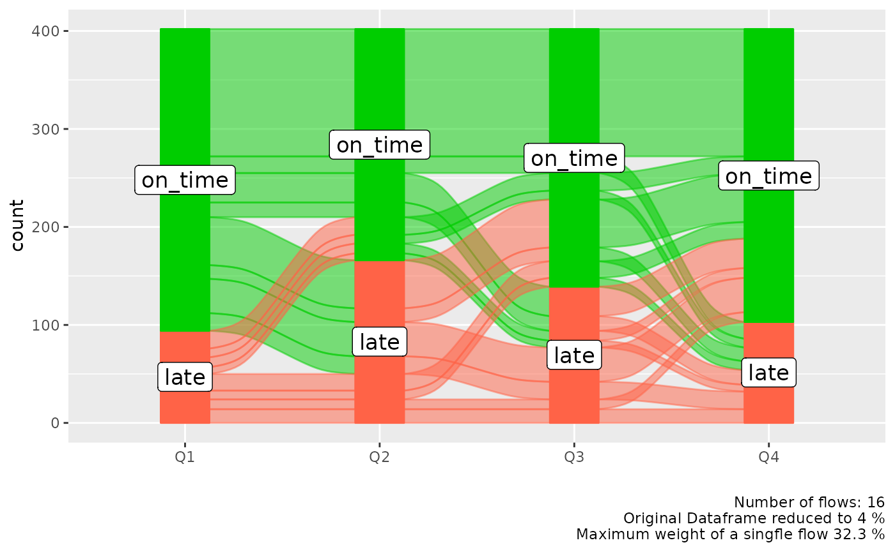
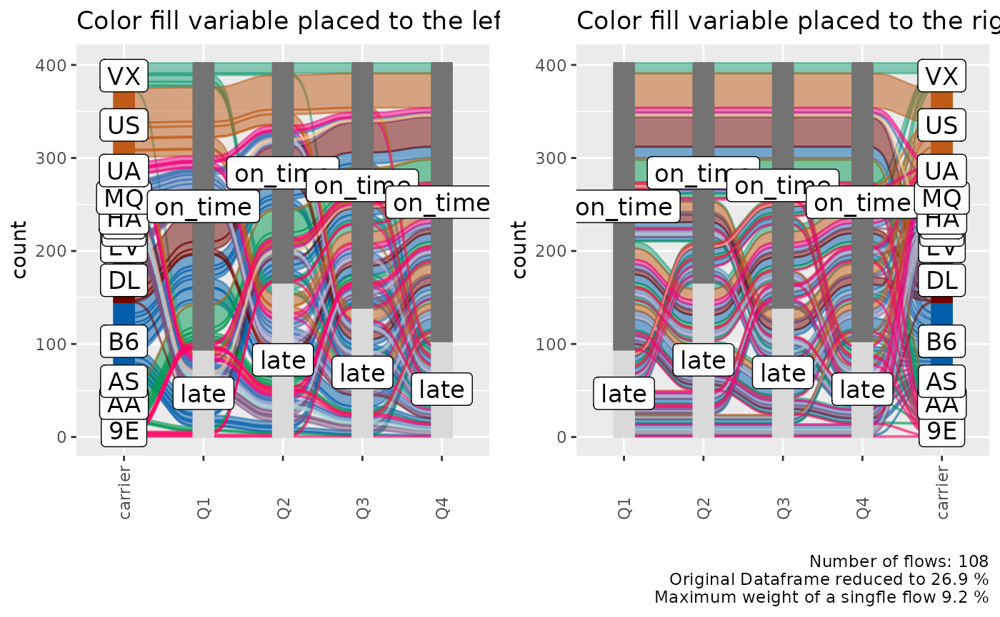
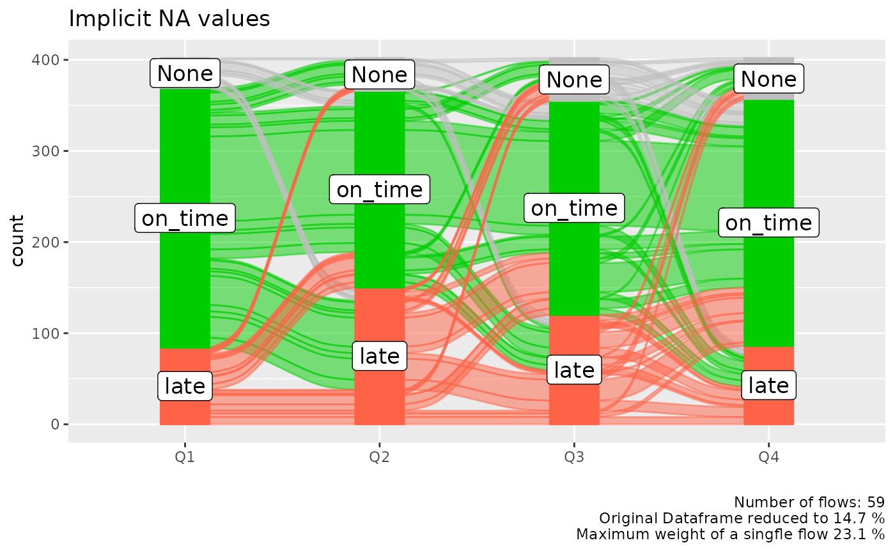

Data Exploration with Alluvial Plots
Björn Koneswarakantha
Source:vignettes/data_exploration.Rmd
data_exploration.RmdIntroduction
Alluvial plots are a form of sankey diagrams that are a great tool for exploring categorical data. They group categorical data into flows that can easily be traced in the diagram. Other than sankey diagrams they are constrained to x-y dimensions, however their graphical grammar is a bit more complex then that of a regular x-y plot. The ggalluvial package made a great job of translating that grammar into ggplot2 syntax and gives you many option to tweak the appearance of a plot, nevertheless there still remains a multilayered complexity that makes it difficult to use ggalluvial for explorative data analysis. easyalluvial provides a simple interface to this package that allows you to put out a decent alluvial from any dataframe where data is stored in either long or wide format while automatically binning continuous data. It is meant to allow a quick visualisation of entire dataframes similar to the visualisations created by the tabplot package providing different colouring options which give it the flexibility needed for data exploration.
Wide Format
Sample data
suppressPackageStartupMessages( require(easyalluvial) )
suppressPackageStartupMessages( require(tidyverse) )
data_wide = as_tibble(mtcars)
categoricals = c('cyl', 'vs', 'am', 'gear', 'carb')
numericals = c('mpg', 'cyl', 'disp', 'hp', 'drat', 'wt', 'qsec')
data_wide = data_wide %>%
mutate_at( vars(categoricals), as.factor ) %>%
mutate( car_id = row_number() )## Note: Using an external vector in selections is ambiguous.
## ℹ Use `all_of(categoricals)` instead of `categoricals` to silence this message.
## ℹ See <https://tidyselect.r-lib.org/reference/faq-external-vector.html>.
## This message is displayed once per session.| mpg | cyl | disp | hp | drat | wt | qsec | vs | am | gear | carb | car_id |
|---|---|---|---|---|---|---|---|---|---|---|---|
| 21.0 | 6 | 160 | 110 | 3.90 | 2.620 | 16.46 | 0 | 1 | 4 | 4 | 1 |
| 21.0 | 6 | 160 | 110 | 3.90 | 2.875 | 17.02 | 0 | 1 | 4 | 4 | 2 |
| 22.8 | 4 | 108 | 93 | 3.85 | 2.320 | 18.61 | 1 | 1 | 4 | 1 | 3 |
| 21.4 | 6 | 258 | 110 | 3.08 | 3.215 | 19.44 | 1 | 0 | 3 | 1 | 4 |
| 18.7 | 8 | 360 | 175 | 3.15 | 3.440 | 17.02 | 0 | 0 | 3 | 2 | 5 |
| 18.1 | 6 | 225 | 105 | 2.76 | 3.460 | 20.22 | 1 | 0 | 3 | 1 | 6 |
alluvial_wide()
Binning of Numerical Variables
This function produces a simple alluvial plot of the given dataframe. Numerical variables are centered, scaled and yeo johnson transformed (transformed to resemble more of a normal distribution) by easyalluvial::manip_bin_numerics(). Outliers as defined by the boxplot criteria ( see documentation for grDevices::boxplot.stats()) are stunted to to the min and max values that are defined by the whiskers of the box plot. The so transformed numeric variables are then cut into 5 (default) equally ranged bins which are labeled ‘LL’ (low-low), ‘ML’ (medium-low), ‘M’ (medium), ‘MH’ (medium-high), HH (high-high) by default.
alluvial_wide(data_wide
, bins = 5 # Default
, bin_labels = c('LL','ML','M','MH','HH') # Default
, fill_by = 'all_flows'
)
Alluvial Plot Organisation
Each group of stacked bars represents a variable while the size of each segment represents how many observations in the dataframe belong to that level machting the segment label. The colored flows between the bar stack represent a group of observations that match the value for each variable indicated by the flow. The thickness of the flow indicates how many observations belong to that group.
We see that each flow has more or less the same thickness and the statistical information in the plot caption tells us that we have 30 flows in total for 32 observations in the dataframe. Which means that almost each observation is unique in its combination of variable values.
Reduce the Number of Variables
In order to reduce the complexity we can use a helper function plot_condensation() to get an idea which variables we want to include in our alluvial plot. Lets say we are especially interested in the mpg (miles per gallon) variable and how it relates to the other variables. plot_condensation will look for other variables it can combine mpg with while trying to condense the data frame to a minimum.
plot_condensation(data_wide, first = mpg)
In general we want to condense the dataframe to 50% or less we might get a meaningful alluvial when looking at mpg, cyl, vs, am in that order.
alluvial_wide( select(data_wide, mpg, cyl, vs, am), fill_by = 'first_variable' )
Reorder Levels
We can see a clear pattern in the flows now, especially now that we have colored the flows by the mpg variable. However some of the flows are unnecessarily criss-crossing. We can improve this by changing the order of the levels of the cyl variable.
alluvial_wide( select(data_wide, mpg, cyl, vs, am)
, fill_by = 'first_variable'
, order_levels = c('8','6','4') )
If levels of several variables have levels of the same name we cannot order them individually per variable, this is a design choice (see documentation of alluvial_wide() ). If we want to reorder them we need to assign individual level names first.
p_unordered = alluvial_wide( select(data_wide, mpg, disp, hp)
, fill_by = 'first_variable' ) +
labs( title = 'Unordered', caption = '\n\n' )
bin_labels = c('mpg_LL','mpg_LM','mpg_M','mpg_MH','mpg_HH')
p_ordered = data_wide %>%
mutate( mpg = manip_bin_numerics(mpg, bin_labels = bin_labels)
, mpg = fct_rev(mpg) ) %>%
select( mpg, disp, hp) %>%
alluvial_wide() +
labs( title = 'Ordered')
gridExtra::grid.arrange( p_unordered, p_ordered, nrow = 1 )
Long Format
In certain cases we might want to start with a dataframe that is already in long format, this is mostly the case for time-series data where we want to track a categorical value over different time periods.
Sample Data
monthly_flights = nycflights13::flights %>%
group_by(month, tailnum, origin, dest, carrier) %>%
summarise() %>%
group_by( tailnum, origin, dest, carrier) %>%
count() %>%
filter( n == 12 ) %>%
select( - n ) %>%
left_join( nycflights13::flights ) %>%
.[complete.cases(.), ] %>%
ungroup() %>%
mutate( flight_id = pmap_chr(list(tailnum, origin, dest, carrier), paste )
, qu = cut(month, 4)) %>%
group_by(flight_id, carrier, origin, dest, qu ) %>%
summarise( mean_arr_delay = mean(arr_delay) ) %>%
ungroup() %>%
mutate( mean_arr_delay = ifelse( mean_arr_delay < 10, 'on_time', 'late' ) )## `summarise()` regrouping output by 'month', 'tailnum', 'origin', 'dest' (override with `.groups` argument)## Joining, by = c("tailnum", "origin", "dest", "carrier")## `summarise()` regrouping output by 'flight_id', 'carrier', 'origin', 'dest' (override with `.groups` argument)
levels(monthly_flights$qu) = c('Q1', 'Q2', 'Q3', 'Q4')
data_long = monthly_flights
knitr::kable( head( data_long) )| flight_id | carrier | origin | dest | qu | mean_arr_delay |
|---|---|---|---|---|---|
| N0EGMQ LGA BNA MQ | MQ | LGA | BNA | Q1 | on_time |
| N0EGMQ LGA BNA MQ | MQ | LGA | BNA | Q2 | on_time |
| N0EGMQ LGA BNA MQ | MQ | LGA | BNA | Q3 | on_time |
| N0EGMQ LGA BNA MQ | MQ | LGA | BNA | Q4 | on_time |
| N11150 EWR MCI EV | EV | EWR | MCI | Q1 | late |
| N11150 EWR MCI EV | EV | EWR | MCI | Q2 | late |
alluvial_long()
In long format we only need the column that contains the keys (timepoints, Q1, Q2, Q3, Q4) and the values (late, ontime), but we also need a column for the ID (flight_id) because in long format data for one flight is spread over 4 rows and the function needs to know which IDs to group to put into a flow. If there is implicitly missing data so one flight_id has less than in this case four rows of data (one for each timepoint) it will be made explicit and labeled 'NA'.
col_vector = c('tomato', 'green3')
alluvial_long(data_long
, key = qu
, value = mean_arr_delay
, id = flight_id
, fill_by = 'value'
, col_vector_flow = col_vector
, col_vector_value = col_vector
)
We might be more interested which airline carrier had the most late flights, we can add it as an additional variable to the plot and use it for coloring. We can place this variable either on the left or on the right.
p_right = alluvial_long(data_long
, key = qu
, value = mean_arr_delay
, id = flight_id
, fill = carrier
, fill_by = 'last_variable'
, fill_right = T # Default
) +
labs(title = 'Color fill variable placed to the right')
p_left = alluvial_long(data_long
, key = qu
, value = mean_arr_delay
, id = flight_id
, fill = carrier
, fill_by = 'last_variable'
, fill_right = F
) +
labs(title = 'Color fill variable placed to the left'
, caption = '\n\n')
gridExtra::grid.arrange( p_left, p_right, nrow = 1)
Order Levels
alluvial_long() takes three different order_levels_* arguments, one for the keys (x-axis) one for the values (y-axis) and one for the fill variable. Here we want to demonstrate how to order the carrier variable by number of flights.
carriers_ordered_by_count = data_long %>%
group_by(carrier) %>%
count() %>%
arrange( n ) %>%
.[['carrier']]
alluvial_long(data_long
, key = qu
, value = mean_arr_delay
, id = flight_id
, fill = carrier
, fill_by = 'last_variable'
, order_levels_fill = carriers_ordered_by_count
, fill_right = F
) +
labs(title = 'Carriers ordered by number of flights')
General
Missing Data
Explicitly and implicitly missing data will automatically be labeled as 'NA' and added as a level. The order of that level can be changed like any other. We will automatically generate implicitly missing data if we sample only a fraction of our long format dataframe, because then not every flight_id will have a value (late, on_time) assigned for each time point (Q1, Q2, Q3, Q4). We can replace 'NA' with any other string.
col_vector = c( 'tomato', 'grey', 'green3')
data_na = data_long %>%
select(flight_id, qu, mean_arr_delay) %>%
sample_frac(0.9)
alluvial_long(data_na
, key = qu
, value = mean_arr_delay
, id = flight_id
, fill_by = 'value'
, NA_label = 'None'
, col_vector_value = col_vector
, col_vector_flow = col_vector
) +
labs(title = 'Implicit NA values')
Colors
alluvial_wide() and alluvial_long take any sequence of either HEX code or string color values. easyalluvial offers some convenience functions around constructing qualitative color palettes for distinct values.
palette_qualitative() %>%
palette_filter(greys = F) %>%
palette_plot_rgp()
Connect Flows to observations in original data
We might recognise interesting patterns in the alluvial plot that we want to follow up upon. For example which cars With medium-low mpg and 8 cyl and 0 vs has an am value of 1. Note that we are passing the car_id variable.
p = alluvial_wide( select(data_wide, mpg, cyl, vs, am, car_id)
, id = car_id
, fill_by = 'first_variable'
, order_levels = c('8','6','4') )
p
The plot objects returned by both functions have an attribute called data_key which is an x-y table arranged like the alluvial plot one column containing the original ID. We can use the car_id variable to rejoin the original dataframe.
p$data_key %>%
filter( mpg == 'ML'
, cyl == 8
, vs == 0
, am == 1 ) %>%
# in order to convert factors to integers we have to convert them
# to character first. Converting from factor returns the order of
# the factor instead.
mutate( car_id = as.character(car_id)
, car_id = as.integer(car_id) ) %>%
left_join(data_wide, by = 'car_id') %>%
knitr::kable()| car_id | mpg.x | cyl.x | vs.x | am.x | alluvial_id | n | mpg.y | cyl.y | disp | hp | drat | wt | qsec | vs.y | am.y | gear | carb |
|---|---|---|---|---|---|---|---|---|---|---|---|---|---|---|---|---|---|
| 29 | ML | 8 | 0 | 1 | 11 | 2 | 15.8 | 8 | 351 | 264 | 4.22 | 3.17 | 14.5 | 0 | 1 | 5 | 4 |
| 31 | ML | 8 | 0 | 1 | 11 | 2 | 15.0 | 8 | 301 | 335 | 3.54 | 3.57 | 14.6 | 0 | 1 | 5 | 8 |